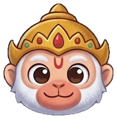

Saya siap membantu...
Pengenalan Dasar
Klaim koin setiap hari, jaga streak belajarmu, dan kumpulkan lencana dari Jalur Belajar.
Kamu belum masuk
SorSinggih v1.0
Akun dipakai untuk menyimpan kemajuan belajar di Jalur Belajar.
Belajar Bahasa Bali dengan pantas, sesuai lawan bicara.
Versi 1.0 · diperbarui 31 Oktober 2026SorSinggih adalah website berbasis AI untuk belajar Bahasa Bali. Bahasa Bali punya tingkat tutur (sor singgih): pilihan kata berubah menurut siapa lawan bicaramu, misalnya teman, orang tua, guru, atau pemuka agama.
Banyak anak muda ragu memakai Bahasa Bali halus, dan pendatang tidak tahu cara bertutur hormat. SorSinggih membantu dengan menerjemahkan, menjelaskan alasan tiap pilihan kata, dan mengoreksi kalimat buatanmu sendiri.
SorSinggih masih berupa MVP. Berikut bagian yang belum sempurna, kami tuliskan terus terang supaya kamu tahu apa yang sudah bisa dan belum bisa diandalkan.
Terjemahan dan koreksi dibuat AI tanpa kamus rujukan khusus, dan belum ada penanda tingkat keyakinan. Periksa kembali dengan penutur asli, terutama untuk situasi resmi atau upacara.
Konten belajar masih sedikit (35 kosakata, 15 kalimat latihan bicara, 5 bacaan) dan belum divalidasi penutur. Nama validator akan dicantumkan di sini setelah verifikasi selesai.
Pengenalan suara dan pembacaan hasil memakai Bahasa Indonesia, jadi rekaman ucapan Bali bisa salah terbaca dan logatnya belum tepat. Fitur suara juga tidak tersedia di semua browser, seperti Firefox.
Nilai dihitung dari kemiripan teks hasil rekaman dengan kalimat target, bukan dari penilaian pelafalan yang sebenarnya.
Akun dan kemajuan belajar tidak tersinkron antar perangkat, dan hilang jika data browser dihapus. Sistem akun ini cukup untuk prototipe, belum untuk produksi.
Belum ada tombol untuk menandai hasil yang kurang tepat, sehingga koreksi dari penutur belum bisa masuk ke perbaikan produk.
Keluaran hanya berupa huruf Latin, dan perbedaan dialek antar daerah di Bali belum dibedakan.
Fitur AI butuh koneksi internet dan dibatasi 20 permintaan per menit untuk tiap pengguna, juga bergantung pada kuota layanan Gemini. Belum ada mode offline.
SorSinggih adalah alat bantu belajar yang memakai AI. Hasilnya dapat keliru dan sebaiknya diperiksa dengan penutur Bahasa Bali.
Kalimatmu dikirim ke layanan AI pihak ketiga (Google Gemini API) untuk diproses. Pada tingkat layanan gratis, penyedia dapat memakai masukan untuk meningkatkan produknya, jadi jangan memasukkan data pribadi.
Server SorSinggih tidak menyimpan kalimatmu ke database. Akun dan kemajuan belajar disimpan hanya di browser perangkatmu.
SorSinggih v1.0 · dibuat untuk pelestarian dan pembelajaran Bahasa Bali